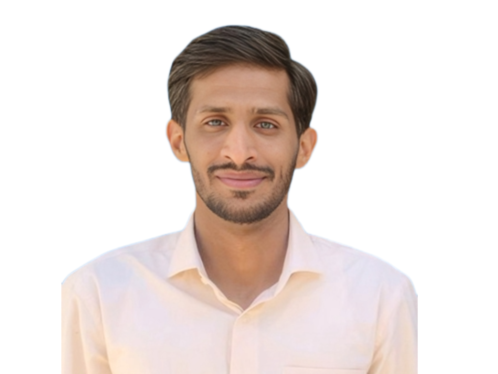

Abdul Basit
I am a Master-2 student in Machine Vision and Artificial Intelligence at UPSaclay in the concluding phase of my M.S. My work specializes in LLMs, Computer Vision, Deep learning, Fine-tuning, RAG, RL, Graphs, and AI-agents.
I am driven towards research-based projects and equally enjoy working on the robust engineering and deployment aspects to bring those concepts to life and test them in the wild.
Email: basitmal36 [at] gmail [dot] com
Work Experience
AI Research Engineer @ ORANGE
Paris | Feb 2024 - PresentModeling complex network topologies and building performance enhanced GNNs. Developing end-to-end machine learning pipelines extracting KPIs, writing custom training loops and distributed training on high-performance clusters.
Engineering Intern @ Aquagen Pvt.Ltd
Aug 2023 - Sept 2023Implemented PLC code for process automation, ensuring accurate feedback from sensors. Upgraded the HMI for monitoring the Generation of the plant.
Research Experience
Multimodal Text-Guided Video Segment Search
Explored multimodal capabilities for text-guided temporal video retrieval, focusing on retrieving specific moments within videos based on natural language queries. Studied different sampling strategies (uniform, adaptive, dynamic) to retrieve the most informative frames efficiently.
3-D Reconstruction of Scenes from Images
Analyzed state-of-the-art machine learning techniques for 3D reconstruction from 2D images, including NeRF, PixelNeRF, Gaussian Splatting, and Neuralangelo. Evaluated methods for achieving high-fidelity 3D reconstructions from various input data scenarios.
GAN-Based Data Augmentation & Style Transfer
Developed Conditional GANs with progressive resolution growth to generate high-quality synthetic data, significantly improving CNN classifier performance. Implemented CycleGAN for unpaired image-to-image translation.
Projects
- Fine-tuned (Instruction based) Mistral-7B using Q-LoRA on Alpaca Dataset
- Built Multimodal Vision Language Model from scratch (PaliGemma)
- Implemented Large Language Model from scratch (LLaMa2)
- Implemented original Transformer paper from scratch using PyTorch (FR-ENG translation)
- Implemented VIT (Vision Transformer) from scratch using PyTorch on CIFAR10
- Implemented CLIP from scratch using JAX
Education
M2 Machine Vision and Artificial Intelligence (MMVAI)
2024 - 2026University of Paris Saclay
Bachelor of Engineering (EE)
2020 - 2024Bahria University